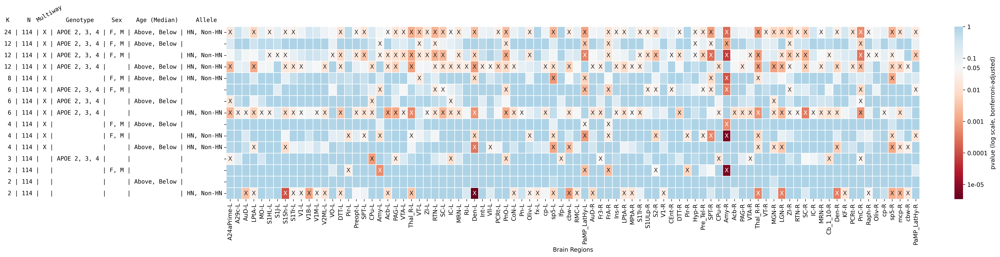
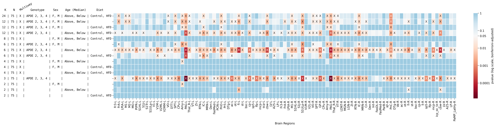

import itertools
from itertools import combinations
import matplotlib.pyplot as plt
import numpy as np
import pandas as pd
import seaborn as sns
from sklearn.preprocessing import OneHotEncoder
from statsmodels.stats.multitest import multipletests
from hyppo.independence import Dcorr
from hyppo.tools import chi2_approx
def flatten(l):
return [item for sublist in l for item in sublist]
# volumes = pd.read_csv("../data/new/processed/volumes.csv")
# # Normalize volumes
# vols = []
# for idx, row in meta.iterrows():
# ID = row["ID"]
# vols.append(volumes[[ID]].values.ravel())
# vols = np.vstack(vols)
# vols /= vols.sum(axis=1, keepdims=True)
d = 3
vols = np.load("../data/embeddings/vol_embed.npy")
vols = vols[:, :, :d]
fa = np.load("../data/embeddings/fa_embed.npy")
fa = fa[:, :, :d]
vols = np.concatenate([vols, fa], axis=2)
meta = pd.read_csv("../data/new/processed/meta.csv")
# Split age into above median ("AM") or blow median ("BM")
median = meta.loc[:, "Age"].median()
meta.loc[:, "Age"] = meta.loc[:, "Age"] <= median
for idx, row in meta.iterrows():
age = row["Age"]
if age:
meta.loc[idx, "Age"] = "Below"
else:
meta.loc[idx, "Age"] = "Above"
genotypes = [
[],
("Genotype_APOE22", "Genotype_APOE33"),
("Genotype_APOE22", "Genotype_APOE44"),
("Genotype_APOE33", "Genotype_APOE44"),
("Genotype_APOE22", "Genotype_APOE33", "Genotype_APOE44"),
]
sex = [["Sex_Female", "Sex_Male"], ["Sex_Female"], ["Sex_Male"], []]
diet = [["Diet_Control", "Diet_HFD"], ["Diet_Control"], ["Diet_HFD"], []]
allele = [["Allele_HN", "Allele_Non-HN"], ["Allele_HN"], ["Allele_Non-HN"], []]
age = [["Age_Above", "Age_Below"], ["Age_Above"], ["Age_Below"], []]
groups = list(product(genotypes, sex, allele, age))
lengths = [list(map(len, sublist)) for sublist in groups]
filter_list = [any(list(map(lambda x: x >= 2, sublist))) for sublist in lengths]
TEST_LIST = list(itertools.compress(groups, filter_list))
TEST_LIST = [list(itertools.chain.from_iterable(i)) for i in TEST_LIST]
TEST_LIST = [i + ["Diet_Control"] for i in TEST_LIST]
# Column labels
# APOE2, APOE3, APOE4, NON-HN, HN, Female, Male
enc = OneHotEncoder(handle_unknown="ignore")
tmp = meta[["Genotype", "Sex", "Diet", "Allele", "Age"]]
enc.fit(tmp)
lookup = {key: val for key, val in zip(enc.get_feature_names_out(), range(12))}
# %%
# Run node wise
res = []
count = 0
for test in TEST_LIST:
lookup_codes = [lookup[i] for i in test]
test_multiway_table = multiway_table[:, lookup_codes]
maximum = np.max(test_multiway_table.sum(axis=1))
idx = test_multiway_table.sum(axis=1) == maximum
x = vols[idx]
y = test_multiway_table[idx]
n = x.shape[0]
if n < 20:
continue
else:
count += 1
tmp_res = []
for i in range(x.shape[1]):
stat, pval = chi2_approx(Dcorr().statistic, x[:, i], y)
tmp_res.append(pval)
# indicators
apoe2 = True if "Genotype_APOE22" in test else False
apoe3 = True if "Genotype_APOE33" in test else False
apoe4 = True if "Genotype_APOE44" in test else False
genotype_indicator = any([apoe2, apoe3, apoe4])
female = True if "Sex_Female" in test else False
male = True if "Sex_Male" in test else False
sex_indicator = female and male
hn = True if "Allele_HN" in test else False
non_hn = True if "Allele_Non-HN" in test else False
hn_indicator = hn and non_hn
age_above = True if "Age_Above" in test else False
age_below = True if "Age_Below" in test else False
age_indicator = age_above and age_below
multiway = (
True
if (genotype_indicator + sex_indicator + hn_indicator + age_indicator) >= 2
else False
)
res.append(
[
multiway,
apoe2,
apoe3,
apoe4,
female,
male,
hn,
non_hn,
age_above,
age_below,
n,
*tmp_res,
]
)
columns = [
"Multiway",
"APOE2",
"APOE3",
"APOE4",
"Female",
"Male",
"HN",
"Non-HN",
"Age-Above",
"Age-Below",
"N",
] + volumes.structure.to_list()
df = pd.DataFrame(res, columns=columns)
K = []
for idx, row in df.iterrows():
total = row[["APOE2", "APOE3", "APOE4"]].sum()
if total == 0:
total = 1
if row[["Female", "Male"]].sum() > 0:
total *= row[["Female", "Male"]].sum()
if row[["HN", "Non-HN"]].sum() > 0:
total *= row[["HN", "Non-HN"]].sum()
if row[["Age-Above", "Age-Below"]].sum() > 0:
total *= row[["Age-Above", "Age-Below"]].sum()
K.append(total)
df["K"] = K
df.sort_values(
by=["N", "K", "Female", "Male", "Age-Above", "Age-Below", "Non-HN", "HN", "K"],
inplace=True,
ascending=False,
)
i_new = []
for idx, row in df.iterrows():
K = row["K"]
N = row["N"]
if row["Multiway"]:
multiway = "X"
else:
multiway = " "
geno_row = row[["APOE2", "APOE3", "APOE4"]]
if np.all(geno_row == [True, True, True]):
genotype = "APOE 2, 3, 4"
elif np.all(geno_row == [True, True, False]):
genotype = "APOE 2, 3, "
elif np.all(geno_row == [True, False, True]):
genotype = "APOE 2, 4"
elif np.all(geno_row == [False, True, True]):
genotype = "APOE 3, 4"
else:
genotype = " "
gender_row = row[["Female", "Male"]]
if np.all(gender_row == [True, True]):
gender = "F, M"
elif np.all(gender_row == [False, True]):
gender = " M"
elif np.all(gender_row == [True, False]):
gender = "F "
else:
gender = " "
allele_row = row[["HN", "Non-HN"]]
if np.all(allele_row == [True, True]):
allele = "HN, Non-HN"
elif np.all(allele_row == [False, True]):
allele = " Non-HN"
elif np.all(allele_row == [True, False]):
allele = "HN "
else:
allele = " "
age_row = row[["Age-Above", "Age-Below"]]
if np.all(age_row == [True, True]):
age = "Above, Below"
elif np.all(age_row == [False, True]):
age = " Below"
elif np.all(age_row == [True, False]):
age = "Above "
else:
age = " "
index = f"{K:2d} | {N:3d} | {multiway} | {genotype} | {gender} | {age} | {allele}"
i_new.append(index)
df.index = i_new
node_labels[node_labels.Abbreviation == "S1Sh"]
| Structure | Abbreviation | Hemisphere | Level_1 | Level_2 | Level_3 | Level_4 | Subdivisions_7 | index | index2 | clusfound | Subdivisions_7_nowm | Abbreviation-Hemisphere | |
|---|---|---|---|---|---|---|---|---|---|---|---|---|---|
| 29 | Primary_Somatosensory_Cortex_Shoulder_Region | S1Sh | Left | 1_forebrain | 1_secondary_prosencephalon | 1_isocortex | 1_frontal_cortex | 1_isocortex | 30 | 30.0 | 0 | 1_isocortex | S1Sh-L |
| 195 | Primary_Somatosensory_Cortex_Shoulder_Region | S1Sh | Right | 1_forebrain | 1_secondary_prosencephalon | 1_isocortex | 1_frontal_cortex | 1_isocortex | 196 | 1030.0 | 0 | 1_isocortex | S1Sh-R |
pvalues = df.iloc[:, 11:-1].copy()
sig, corrected_pvals, b, alpha = multipletests(
pvalues.values.ravel(), method="bonferroni"
)
pvalues.iloc[:, :] = corrected_pvals.reshape(count, -1)
mask = np.select([pvalues < 0.05, pvalues >= 0.05], ["X", ""], default=pvalues)
node_labels = pd.read_excel("../data/raw/CHASSSYMM3AtlasLegends.xlsx")[:-1]
node_labels.loc[:, "Abbreviation"] = node_labels.loc[:, "Abbreviation"].replace(
"PHD_PaMP_Post_and_LatHy", "PaMP_LatHy"
)
node_labels["Abbreviation-Hemisphere"] = (
node_labels["Abbreviation"] + "-" + node_labels["Hemisphere"].str[0]
)
left_nodes = (node_labels["Hemisphere"] == "Left").values
right_nodes = (node_labels["Hemisphere"] == "Right").values
nodes_to_choose = ((pvalues <= 0.05).sum() >= 1).values
# pvalues.columns = node_labels["Abbreviation"].values
pvalues.columns = node_labels["Abbreviation-Hemisphere"].values
# pvalues = pvalues[sorted(pvalues.columns)]
left_idx = nodes_to_choose & left_nodes
right_idx = nodes_to_choose & right_nodes
rows_to_choose = ((pvalues <= 0.05).sum(axis=1) >= 1).values
idx = np.argsort(tmp.iloc[0])[:5]
tmp.iloc[0][idx].index
Index(['Amy-R', 'PnC-R', 'Thal_R-R', 'SPT-R', 'PaMP_LatHy-L'], dtype='object')
tmp.iloc[0]
A24a-L 0.157048
A24aPrime-L 0.018229
A24b-L 1.000000
A24bPrime-L 1.000000
A29a-L 1.000000
...
IRN-R 1.000000
PaMP_LatHy-R 0.019975
PR_p3Tg_L-R 0.813641
PVG-R 1.000000
BLA-R 1.000000
Name: 24 | 114 | X | APOE 2, 3, 4 | F, M | Above, Below | HN, Non-HN, Length: 332, dtype: float64
rows_to_choose = np.arange(15)
tmp = pvalues.iloc[rows_to_choose]
nodes_to_choose = ((tmp <= 0.05).sum() >= 1).values
# pvalues.columns = node_labels["Abbreviation"].values
tmp.columns = node_labels["Abbreviation-Hemisphere"].values
# pvalues = pvalues[sorted(pvalues.columns)]
left_idx = nodes_to_choose & left_nodes
right_idx = nodes_to_choose & right_nodes
cbar_ticks = [
0.000000001,
0.00000001,
0.0000001,
0.000001,
0.00001,
0.0001,
0.001,
0.01,
0.05,
0.1,
1,
]
fig, ax = plt.subplots(
figsize=(24, 6),
dpi=300,
constrained_layout=True,
)
sns.heatmap(
tmp.transform("log10").iloc[rows_to_choose, nodes_to_choose],
ax=ax,
annot=mask[:, nodes_to_choose][rows_to_choose, :],
fmt="",
square=False,
linewidths=0.5,
center=np.log10(0.05),
cbar_kws={"ticks": np.log10(cbar_ticks)},
cmap="RdBu",
# xticklabels=False,
)
ax.collections[0].colorbar.set_label("pvalue (log scale, bonferroni-adjusted)")
ax.collections[0].colorbar.set_ticklabels(cbar_ticks)
ax.set_yticklabels(ax.get_yticklabels(), ha="right", fontdict={"family": "monospace"})
text_dict = dict(
ha="left",
va="bottom",
transform=ax.transAxes,
fontdict={"family": "monospace"},
)
header = "K N Genotype Sex Age (Median) Allele"
ax.text(-0.3175, 1.02, header, **text_dict)
ax.text(-0.275, 1.02, "Multiway", rotation=30, **text_dict)
ax.set_xlabel("Brain Regions")
# ax.set_title("Effect of HN Allele")
fig.savefig(
"../results/figures/allele_tests_significant_only.png", bbox_inches="tight", dpi=300
)
fig.savefig(
"../results/figures/allele_tests_significant_only.svg", bbox_inches="tight", dpi=300
)

rows_to_choose = np.arange(15)
tmp = pvalues.iloc[rows_to_choose]
nodes_to_choose = ((tmp <= 0.05).sum() >= 1).values
# pvalues.columns = node_labels["Abbreviation"].values
tmp.columns = node_labels["Abbreviation-Hemisphere"].values
# pvalues = pvalues[sorted(pvalues.columns)]
left_idx = nodes_to_choose & left_nodes
right_idx = nodes_to_choose & right_nodes
cbar_ticks = [
0.000000001,
0.00000001,
0.0000001,
0.000001,
0.00001,
0.0001,
0.001,
0.01,
0.05,
0.1,
1,
]
fig, ax = plt.subplots(
nrows=2,
ncols=2,
figsize=(12, 10),
dpi=300,
constrained_layout=True,
gridspec_kw={"width_ratios": [1, 0.05]},
)
sns.heatmap(
tmp.transform("log10").iloc[rows_to_choose, left_idx],
ax=ax[0, 0],
annot=mask[:, left_idx][rows_to_choose, :],
fmt="",
square=False,
linewidths=0.5,
center=np.log10(0.05),
cbar_kws={"ticks": np.log10(cbar_ticks)},
cbar_ax=ax[0, 1],
cmap="RdBu",
# xticklabels=False,
)
# ax[0, 1].collections[0].colorbar.set_label("pvalue (log scale, bonferroni-adjusted)")
# ax[0, 1].collections[0].colorbar.set_ticklabels(cbar_ticks)
ax[0, 0].set_yticklabels(
ax[0, 0].get_yticklabels(), ha="right", fontdict={"family": "monospace"}
)
text_dict = dict(
ha="left",
va="bottom",
transform=ax[0, 0].transAxes,
fontdict={"family": "monospace"},
)
header = "K N Genotype Sex Age (Median) Diet"
ax[0, 0].text(-0.3175, 1.02, header, **text_dict)
sns.heatmap(
tmp.transform("log10").iloc[rows_to_choose, right_idx],
ax=ax[1, 0],
annot=mask[:, right_idx][rows_to_choose, :],
fmt="",
square=False,
linewidths=0.5,
center=np.log10(0.05),
cbar_kws={"ticks": np.log10(cbar_ticks)},
cbar_ax=ax[1, 1],
cmap="RdBu",
# xticklabels=False,
)
# ax[1, 1].collections[0].colorbar.set_label("pvalue (log scale, bonferroni-adjusted)")
# ax[1, 1].collections[0].colorbar.set_ticklabels(cbar_ticks)
ax[1, 0].set_yticklabels(
ax[1, 0].get_yticklabels(), ha="right", fontdict={"family": "monospace"}
)
# ax.set_xlabel("Brain Regions")
# ax.set_title("Effect of HN Allele")
# fig.savefig(
# "../results/figures/allele_tests_significant_only.png", bbox_inches="tight", dpi=300
# )
# fig.savefig(
# "../results/figures/allele_tests_significant_only.svg", bbox_inches="tight", dpi=300
# )
count
207
regions = []
idxes = []
for idx, row in tmp.iterrows():
row = row[row <= 0.05]
regions.append(list(np.argsort(row)[:5].index))
idxes.append(idx)
regions = pd.DataFrame([regions[0]] + regions[-4:-1] + [regions[-1]])
regions = regions.T
regions.columns = ["Genotype+Sex+Age+Allele", "Genotype", "Sex", "Age", "Allele"]
for idx, row in regions.iterrows():
for key, val in row.items():
if val is None:
continue
splits = val.split("-")
if splits[1] == "L":
hemi = "Left"
else:
hemi = "Right"
new_val = node_labels[
(node_labels.Abbreviation == splits[0]) & (node_labels.Hemisphere == hemi)
].Structure.iloc[0]
new_val = new_val + "-" + splits[1]
new_val = new_val.replace("_", " ")
row[key] = new_val
regions
| Genotype+Sex+Age+Allele | Genotype | Sex | Age | Allele | |
|---|---|---|---|---|---|
| 0 | Cingulate Cortex Area 24a prime-L | Cingulate Cortex Area 24a prime-L | Piriform Cortex-L | None | Secondary Auditory Cortex Dorsal Part-L |
| 1 | Lateral Parietal Association Cortex-L | Striatum-L | Amygdala-L | None | Lateral Parietal Association Cortex-L |
| 2 | Primary Somatosensory Cortex Hindlimb Region-L | Periaquaductal Grey-L | PosteriorDorsal ParaventricularMedialParvicell... | None | Primary Somatosensory Cortex Shoulder Region-L |
| 3 | Primary Somatosensory Cortex Shoulder Region-L | Inferior Colliculus-L | Frontal Association Cortex-R | None | Primary Somatosensory Cortex Trunk Region-L |
| 4 | Primary Somatosensory Cortex Trunk Region-L | Pontine Reticular NucleusOral-L | Secondary Somatosensory Cortex-R | None | Primary Visual Cortex-L |
print(regions.to_latex())
\begin{tabular}{llllll}
\toprule
{} & Genotype+Sex+Age+Allele & Genotype & Sex & Age & Allele \\
\midrule
0 & Cingulate Cortex Area 24a prime-L & Cingulate Cortex Area 24a prime-L & Piriform Cortex-L & None & Secondary Auditory Cortex Dorsal Part-L \\
1 & Lateral Parietal Association Cortex-L & Striatum-L & Amygdala-L & None & Lateral Parietal Association Cortex-L \\
2 & Primary Somatosensory Cortex Hindlimb Region-L & Periaquaductal Grey-L & PosteriorDorsal ParaventricularMedialParvicell... & None & Primary Somatosensory Cortex Shoulder Region-L \\
3 & Primary Somatosensory Cortex Shoulder Region-L & Inferior Colliculus-L & Frontal Association Cortex-R & None & Primary Somatosensory Cortex Trunk Region-L \\
4 & Primary Somatosensory Cortex Trunk Region-L & Pontine Reticular NucleusOral-L & Secondary Somatosensory Cortex-R & None & Primary Visual Cortex-L \\
\bottomrule
\end{tabular}
/tmp/ipykernel_45976/2394722967.py:1: FutureWarning: In future versions `DataFrame.to_latex` is expected to utilise the base implementation of `Styler.to_latex` for formatting and rendering. The arguments signature may therefore change. It is recommended instead to use `DataFrame.style.to_latex` which also contains additional functionality.
print(regions.to_latex())
genotypes = [
[],
("Genotype_APOE22", "Genotype_APOE33"),
("Genotype_APOE22", "Genotype_APOE44"),
("Genotype_APOE33", "Genotype_APOE44"),
("Genotype_APOE22", "Genotype_APOE33", "Genotype_APOE44"),
]
sex = [["Sex_Female", "Sex_Male"], ["Sex_Female"], ["Sex_Male"], []]
diet = [["Diet_Control", "Diet_HFD"], ["Diet_Control"], ["Diet_HFD"], []]
allele = [["Allele_HN", "Allele_Non-HN"], ["Allele_HN"], ["Allele_Non-HN"], []]
age = [["Age_Above", "Age_Below"], ["Age_Above"], ["Age_Below"], []]
groups = list(product(genotypes, sex, diet, age))
lengths = [list(map(len, sublist)) for sublist in groups]
filter_list = [any(list(map(lambda x: x >= 2, sublist))) for sublist in lengths]
TEST_LIST = list(itertools.compress(groups, filter_list))
TEST_LIST = [list(itertools.chain.from_iterable(i)) for i in TEST_LIST]
TEST_LIST = [i + ["Allele_HN"] for i in TEST_LIST]
# Column labels
# APOE2, APOE3, APOE4, NON-HN, HN, Female, Male
enc = OneHotEncoder(handle_unknown="ignore")
tmp = meta[["Genotype", "Sex", "Diet", "Allele", "Age"]]
enc.fit(tmp)
lookup = {key: val for key, val in zip(enc.get_feature_names_out(), range(12))}
# %%
# Run node wise
res = []
count = 0
for test in TEST_LIST:
lookup_codes = [lookup[i] for i in test]
test_multiway_table = multiway_table[:, lookup_codes]
maximum = np.max(test_multiway_table.sum(axis=1))
idx = test_multiway_table.sum(axis=1) == maximum
x = vols[idx]
y = test_multiway_table[idx]
n = x.shape[0]
if n <= 20:
continue
else:
count += 1
tmp_res = []
for i in range(x.shape[1]):
stat, pval = chi2_approx(Dcorr().statistic, x[:, i], y)
tmp_res.append(pval)
# indicators
apoe2 = True if "Genotype_APOE22" in test else False
apoe3 = True if "Genotype_APOE33" in test else False
apoe4 = True if "Genotype_APOE44" in test else False
genotype_indicator = any([apoe2, apoe3, apoe4])
female = True if "Sex_Female" in test else False
male = True if "Sex_Male" in test else False
sex_indicator = female and male
hfd = True if "Diet_HFD" in test else False
control_diet = True if "Diet_Control" in test else False
diet_indicator = hfd and control_diet
age_above = True if "Age_Above" in test else False
age_below = True if "Age_Below" in test else False
age_indicator = age_above and age_below
multiway = (
True
if (genotype_indicator + sex_indicator + diet_indicator + age_indicator) >= 2
else False
)
res.append(
[
multiway,
apoe2,
apoe3,
apoe4,
female,
male,
hfd,
control_diet,
age_above,
age_below,
n,
*tmp_res,
]
)
columns = [
"Multiway",
"APOE2",
"APOE3",
"APOE4",
"Female",
"Male",
"HFD",
"Control_Diet",
"Age-Above",
"Age-Below",
"N",
] + volumes.structure.to_list()
df = pd.DataFrame(res, columns=columns)
K = []
for idx, row in df.iterrows():
total = row[["APOE2", "APOE3", "APOE4"]].sum()
if total == 0:
total = 1
if row[["Female", "Male"]].sum() > 0:
total *= row[["Female", "Male"]].sum()
if row[["HFD", "Control_Diet"]].sum() > 0:
total *= row[["HFD", "Control_Diet"]].sum()
if row[["Age-Above", "Age-Below"]].sum() > 0:
total *= row[["Age-Above", "Age-Below"]].sum()
K.append(total)
df["K"] = K
df.sort_values(
by=[
"N",
"K",
"Female",
"Male",
"Age-Above",
"Age-Below",
"Control_Diet",
"HFD",
"K",
],
inplace=True,
ascending=False,
)
i_new = []
for idx, row in df.iterrows():
K = row["K"]
N = row["N"]
if row["Multiway"]:
multiway = "X"
else:
multiway = " "
geno_row = row[["APOE2", "APOE3", "APOE4"]]
if np.all(geno_row == [True, True, True]):
genotype = "APOE 2, 3, 4"
elif np.all(geno_row == [True, True, False]):
genotype = "APOE 2, 3, "
elif np.all(geno_row == [True, False, True]):
genotype = "APOE 2, 4"
elif np.all(geno_row == [False, True, True]):
genotype = "APOE 3, 4"
else:
genotype = " "
gender_row = row[["Female", "Male"]]
if np.all(gender_row == [True, True]):
gender = "F, M"
elif np.all(gender_row == [False, True]):
gender = " M"
elif np.all(gender_row == [True, False]):
gender = "F "
else:
gender = " "
diet_row = row[["Control_Diet", "HFD"]]
if np.all(diet_row == [True, True]):
diet = "Control, HFD"
elif np.all(diet_row == [False, True]):
diet = " HFD"
elif np.all(diet_row == [True, False]):
diet = "Control "
else:
diet = " "
age_row = row[["Age-Above", "Age-Below"]]
if np.all(age_row == [True, True]):
age = "Above, Below"
elif np.all(age_row == [False, True]):
age = " Below"
elif np.all(age_row == [True, False]):
age = "Above "
else:
age = " "
index = f"{K:2d} | {N:2d} | {multiway} | {genotype} | {gender} | {age} | {diet}"
i_new.append(index)
df.index = i_new
pvalues = df.iloc[:, 11:-1].copy()
sig, corrected_pvals, b, alpha = multipletests(
pvalues.values.ravel(), method="bonferroni"
)
pvalues.iloc[:, :] = corrected_pvals.reshape(count, -1)
mask = np.select([pvalues < 0.05, pvalues >= 0.05], ["X", ""], default=pvalues)
left_nodes = (node_labels["Hemisphere"] == "Left").values
right_nodes = (node_labels["Hemisphere"] == "Right").values
nodes_to_choose = ((pvalues <= 0.05).sum() >= 1).values
# pvalues.columns = node_labels["Abbreviation"].values
pvalues.columns = node_labels["Abbreviation-Hemisphere"].values
# pvalues = pvalues[sorted(pvalues.columns)]
left_idx = nodes_to_choose & left_nodes
right_idx = nodes_to_choose & right_nodes
rows_to_choose = ((pvalues <= 0.05).sum(axis=1) >= 1).values
rows_to_choose = np.arange(15)
tmp = pvalues.iloc[rows_to_choose]
nodes_to_choose = ((tmp <= 0.05).sum() >= 1).values
# pvalues.columns = node_labels["Abbreviation"].values
tmp.columns = node_labels["Abbreviation-Hemisphere"].values
# pvalues = pvalues[sorted(pvalues.columns)]
left_idx = nodes_to_choose & left_nodes
right_idx = nodes_to_choose & right_nodes
cbar_ticks = [
0.000000001,
0.00000001,
0.0000001,
0.000001,
0.00001,
0.0001,
0.001,
0.01,
0.05,
0.1,
1,
]
fig, ax = plt.subplots(figsize=(24, 6), dpi=300, constrained_layout=True)
sns.heatmap(
tmp.transform("log10").iloc[rows_to_choose, nodes_to_choose],
ax=ax,
annot=mask[:, nodes_to_choose][rows_to_choose, :],
fmt="",
square=False,
linewidths=0.5,
center=np.log10(0.05),
cbar_kws={"ticks": np.log10(cbar_ticks)},
cmap="RdBu",
# xticklabels=False,
)
ax.collections[0].colorbar.set_label("pvalue (log scale, bonferroni-adjusted)")
ax.collections[0].colorbar.set_ticklabels(cbar_ticks)
ax.set_yticklabels(ax.get_yticklabels(), ha="right", fontdict={"family": "monospace"})
ax.set_xlabel("Brain Regions")
# ax.set_title("Effect of Diet")
text_dict = dict(ha="left", va="bottom", transform=ax.transAxes, family="monospace")
# ax.text(-0.87, 1.02, "K", **text_dict)
# ax.text(-0.79, 1.02, "N", **text_dict)
ax.text(-0.275, 1.02, "Multiway", rotation=30, **text_dict)
# ax.text(-0.65, 1.02, "Genotype", **text_dict)
# ax.text(-0.465, 1.02, "Sex", **text_dict)
# ax.text(-0.365, 1.02, "Median Age", **text_dict)
# ax.text(-0.125, 1.02, "Diet", **text_dict)
header = "K N Genotype Sex Age (Median) Diet"
ax.text(-0.3175, 1.02, header, **text_dict)
fig.savefig(
"../results/figures/diet_tests_significant_only.png", bbox_inches="tight", dpi=300
)
fig.savefig(
"../results/figures/diet_tests_significant_only.svg", bbox_inches="tight", dpi=300
)

rows_to_choose = np.arange(15)
tmp = pvalues.iloc[rows_to_choose]
regions = []
idxes = []
for idx, row in tmp.iterrows():
row = row[row <= 0.05]
regions.append(list(np.argsort(row)[:5].index))
idxes.append(idx)
regions = pd.DataFrame([regions[0]] + regions[-4:-1] + [regions[-1]])
regions = regions.T
regions.columns = ["Genotype + Sex + Age + Diet", "Genotype", "Sex", "Age", "Diet"]
for idx, row in regions.iterrows():
for key, val in row.items():
if val is None:
continue
splits = val.split("-")
if splits[1] == "L":
hemi = "Left"
else:
hemi = "Right"
new_val = node_labels[
(node_labels.Abbreviation == splits[0]) & (node_labels.Hemisphere == hemi)
].Structure.iloc[0]
new_val = new_val + "-" + splits[1]
new_val = new_val.replace("_", " ")
row[key] = new_val
regions
| Genotype + Sex + Age + Diet | Genotype | Sex | Age | Diet | |
|---|---|---|---|---|---|
| 0 | Frontal Association Cortex-L | Frontal Cortex Area 3-L | Amygdala-L | Fimbria-L | None |
| 1 | Primary Motor Cortex-L | Lateral Parietal Association Cortex-L | None | Fimbria-R | None |
| 2 | Secondary Motor Cortex-L | Medial Orbital Cortex-L | None | Cerebellar White Matter-R | None |
| 3 | Ventral Orbital Cortex-L | Parietal Cortex Posterior Area Rostral Part-L | None | None | None |
| 4 | Septum-L | Primary Somatosensory Cortex Hindlimb Region-L | None | None | None |
print(regions.to_latex(index=False))
\begin{tabular}{lllll}
\toprule
Genotype + Sex + Age + Diet & Genotype & Sex & Age & Diet \\
\midrule
Frontal Association Cortex-L & Frontal Cortex Area 3-L & Amygdala-L & Fimbria-L & None \\
Primary Motor Cortex-L & Lateral Parietal Association Cortex-L & None & Fimbria-R & None \\
Secondary Motor Cortex-L & Medial Orbital Cortex-L & None & Cerebellar White Matter-R & None \\
Ventral Orbital Cortex-L & Parietal Cortex Posterior Area Rostral Part-L & None & None & None \\
Septum-L & Primary Somatosensory Cortex Hindlimb Region-L & None & None & None \\
\bottomrule
\end{tabular}
/tmp/ipykernel_45976/1377329203.py:1: FutureWarning: In future versions `DataFrame.to_latex` is expected to utilise the base implementation of `Styler.to_latex` for formatting and rendering. The arguments signature may therefore change. It is recommended instead to use `DataFrame.style.to_latex` which also contains additional functionality.
print(regions.to_latex(index=False))